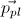
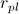
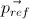
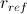
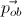
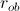
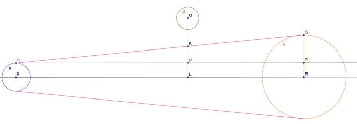

Orbit
Calcul des syzygies
Le programme détecte les situations de syzygie à la volée.
On considère 3 planètes supposées parfaitement sphériques dans l'espace :
| Planète | Vecteur position du centre | Rayon | Couleur schéma |
| Origine (pl). Il s'agit de la planète depuis laquelle on observe le phénomène. |  |  | Bleu |
| Référentiel (ref). C'est la planète devant laquelle on observe le phénomène. |  |  | Orange |
| Obstacle (ob). C'est la planète observée devant le référentiel lors du phénomène. |  |  | Vert |
NB : Pour la suite du problème on considère que le rayon de la planète d'origine est inférieur au rayon de la planète-référentiel. Cela permet de simplifier la démonstration mais il ne s'agit en aucun cas d'une nécessité pour le logiciel qui détermine automatiquement quelle planète de l'origine ou du référentiel a effectivement le plus petit rayon.
Le problème consiste à vérifier que la planète-obstacle soit comprise dans le cône tronqué passant par les extrémités des planètes "référentiel" et "origine". Pour cela on se place dans le plan comprenant les centres des trois sphères.

Le cône apparait en violet. Le référentiel est représenté en jaune, la planète d'origine en bleu et l'obstacle en vert.
© Lucas GAUTHERON (lucas.gautheron gmail.com)
gmail.com)